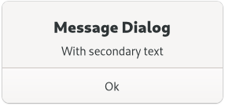

Gtk.MessageDialog¶
Example¶
- Subclasses
None
Methods¶
- Inherited
Gtk.Dialog (11), Gtk.Window (62), Gtk.Widget (181), GObject.Object (37), Gtk.Accessible (15), Gtk.Buildable (1), Gtk.Native (6), Gtk.Root (3)
- Structs
|
Virtual Methods¶
Properties¶
- Inherited
Gtk.Dialog (1), Gtk.Window (25), Gtk.Widget (34), Gtk.Accessible (1)
Name |
Type |
Flags |
Short Description |
|---|---|---|---|
w/co |
|||
r |
|||
r/w/c/en |
|||
r/w |
|||
r/w/en |
|||
r/w |
|||
r/w/en |
Signals¶
- Inherited
Gtk.Dialog (2), Gtk.Window (5), Gtk.Widget (13), GObject.Object (1)
Fields¶
- Inherited
Gtk.Dialog (2), Gtk.Window (5), Gtk.Widget (13), GObject.Object (1)
Name |
Type |
Access |
Description |
|---|---|---|---|
parent_instance |
r |
Class Details¶
- class Gtk.MessageDialog(*args, **kwargs)¶
- Bases
- Abstract
No
- Structure
GtkMessageDialogpresents a dialog with some message text.An example
Gtk.MessageDialogIt’s simply a convenience widget; you could construct the equivalent of
GtkMessageDialogfromGtkDialogwithout too much effort, butGtkMessageDialogsaves typing.The easiest way to do a modal message dialog is to use the
Gtk.DialogFlags.MODALflag, which will call [method`Gtk`.Window.set_modal] internally. The dialog will prevent interaction with the parent window until it’s hidden or destroyed. You can use the [signal`Gtk`.Dialog::response] signal to know when the user dismissed the dialog.An example for using a modal dialog: ```c
Gtk.DialogFlagsflags =Gtk.DialogFlags.DESTROY_WITH_PARENT|Gtk.DialogFlags.MODAL; dialog = gtk_message_dialog_new (parent_window, flags,Gtk.MessageType.ERROR,Gtk.ButtonsType.CLOSE, “Error reading “%s”: %s”, filename,GLib.strerror(errno)); // Destroy the dialog when the user responds to it // (e.g. clicks a button)g_signal_connect (dialog, “response”, G_CALLBACK (
Gtk.Window.destroy),None); ```You might do a non-modal
GtkMessageDialogsimply by omitting theGtk.DialogFlags.MODALflag:```c
Gtk.DialogFlagsflags =Gtk.DialogFlags.DESTROY_WITH_PARENT; dialog = gtk_message_dialog_new (parent_window, flags,Gtk.MessageType.ERROR,Gtk.ButtonsType.CLOSE, “Error reading “%s”: %s”, filename,GLib.strerror(errno));// Destroy the dialog when the user responds to it // (e.g. clicks a button) g_signal_connect (dialog, “response”, G_CALLBACK (
Gtk.Window.destroy),None); ```The
GtkMessageDialogimplementation of theGtkBuildableinterface exposes the message area as an internal child with the name “message_area”.Deprecated since version 4.10: Use [class`Gtk`.AlertDialog] instead
- get_message_area()[source]¶
- Returns
A
GtkBoxcorresponding to the “message area” in the self- Return type
Returns the message area of the dialog.
This is the box where the dialog’s primary and secondary labels are packed. You can add your own extra content to that box and it will appear below those labels. See [method`Gtk`.Dialog.get_content_area] for the corresponding function in the parent [class`Gtk`.Dialog].
Deprecated since version 4.10: Use [class`Gtk`.AlertDialog] instead
Property Details¶
- Gtk.MessageDialog.props.buttons¶
- Name
buttons- Type
- Default Value
- Flags
- Gtk.MessageDialog.props.message_area¶
- Name
message-area- Type
- Default Value
- Flags
The
GtkBoxthat corresponds to the message area of this dialog.See [method`Gtk`.MessageDialog.get_message_area] for a detailed description of this area.
- Gtk.MessageDialog.props.message_type¶
- Name
message-type- Type
- Default Value
- Flags
The type of the message.
- Gtk.MessageDialog.props.secondary_text¶
-
The secondary text of the message dialog.
- Gtk.MessageDialog.props.secondary_use_markup¶
- Name
secondary-use-markup- Type
- Default Value
- Flags
Trueif the secondary text of the dialog includes Pango markup.See [func`Pango`.parse_markup].
- Gtk.MessageDialog.props.text¶
-
The primary text of the message dialog.
If the dialog has a secondary text, this will appear as the title.